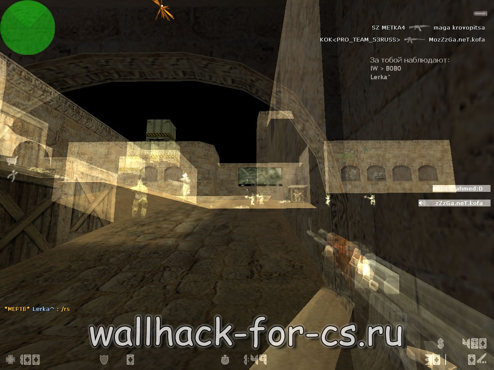
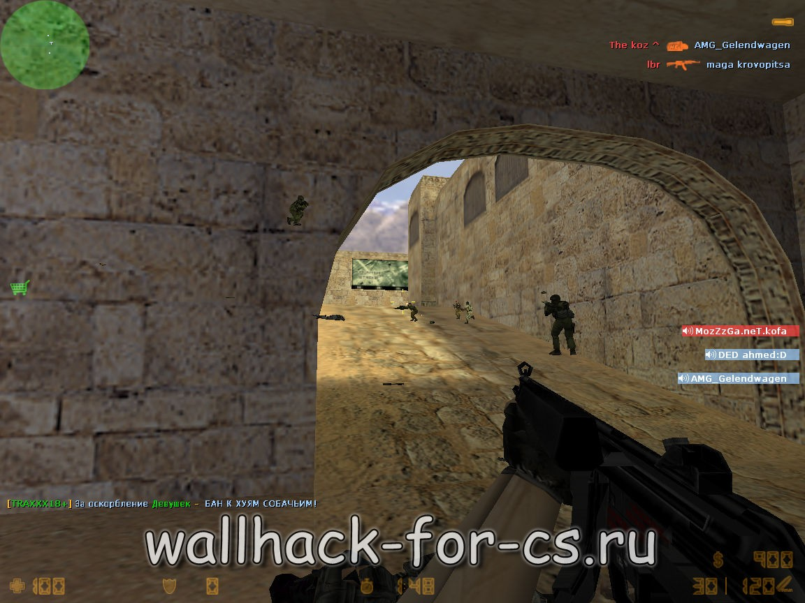
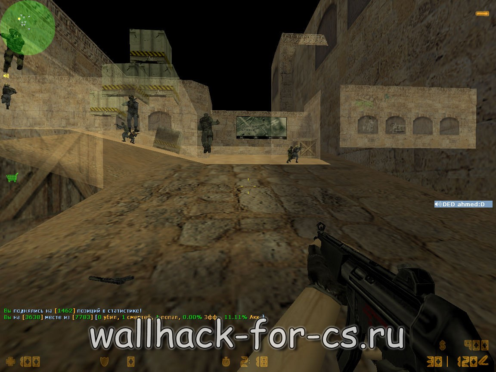

Скачать Wallhack для Counter Strike 1.6
В этой статье пойдет речь о самой распространенной разновидности чита - wh для cs 1.6, который чаще называют просто wh. Этот чит подходит не всем игрокам,так как не дает супер возможностей как другие читы. Но при этом он все-же заслуживает внимания, так как в игре не во всех случаях вам поможет ваша реакция и меткость. В некоторых ситуациях, вам достаточно знать где находится противник, или куда он смотрит и это играет решающую роль. Именно такое преимущество вам и даст данный чит. Он позволяет видеть других игроков сквозь стены и другие текстуры. Вы сможете наказывать задротов с помощью тактики, даже если они быстрее и метче вас.
Что такое wallhack?
На этом сайте будут представлены много различных читов имеющих функцию wh для cs 1.6. Но так как это главная страница, на ней должен быть самый крутой чит, а это без сомнения opengl32.dll. В свое время этот чит был легендой, некоторые люди умудрялись продавать его, возможно кто-то и сейчас это делает, но на нашем сайте вы размещаются файлы только в свободном доступе. На этом сайте будут представлены много различных читов имеющих функцию wh для cs 1.6. Но так как это главная страница, на ней должен быть самый крутой чит, а это без сомнения opengl32.dll. В свое время этот чит был легендой, некоторые люди умудрялись продавать его, возможно кто-то и сейчас это делает, но на нашем сайте вы размещаются файлы только в свободном доступе.

WH для cs 1.6 на примере Opengl32.dll
И так что из себя представляет данный чит? Opengl32 - чит для cs 1.6, это всего один файлик в формате .dll, который нужно поместить в корневой каталок вашей игры counter strike 1.6. Файл не нужно запускать ни перед игрой, ни после, как только вы поместили его в папку с игрой считайте вы его уже включили. Раньше opengl32.dll не палился ни какими античитами, словить вас на использовании читов могли только админы, и то если увидят как вы наводитесь на врага через стену, если же вы будете играть аккуратно тогда вам ничего не грозило. Сейчас ситуация изменилась, хоть на многих чит-порталах и утверждают обратное, и данный чит остался одним из лучших в своем роде, он теперь палится некоторыми анти-чит плагинами. В редких случаях вы можете получить бан, не успев наказать не единого задрота. По своему опыту могу сказать что такие плагины стоят примерно на 5% серверов. На остальных 95% можно спокойно играть, наказывать задров и оставаться при этом незамеченным в использовании wh для cs 1.6.
Функции и возможности
Теперь немного о функциях wh для cs 1.6 и о то как его использовать с минимальной вероятностью быть забаненым. Напомню, в этой статье речь идет о чите opengl32.dll. Итак приступим. Скачайте чит по ссылке в конце статьи, извлеките содержимое архива в корневую папку вашего Counter strike 1.6. Теперь можете заходить в игру, советую использовать no-steam клиент и 43 патч. На сколько я знаю этот wh идет на всех патчах, но все таки я бы по советовал играть на самом новом - 43 патче. Теперь заходим на первый попавшийся сервер. При выборе сервера я обычно останавливаюсь на серверах с онлайном 12 - 16 человек, это говорит о том что сервер не очень раскрученный, меньше вероятность нарваться на античит плагин. Но в принципе можно спокойно играть и на серверах с максимальным онлайном. Зашли на сервер? теперь осталось самое простое - выбрать подходящий вам по стилю игры режим wh. В нашем чите предусмотрено 3 режима которые переключаются нажатием на кнопку F1.
ASUS Wallhack
Ниже вы видите скриншот режима ASUS Wallhack. Как вы видите он позволяет не только видеть сквозь стены, а еще и делает их полупрозрачными, как бы призрачными. Тоже самое происходит и с моделями игроков. На мой взгляд используя этот режим играть не очень удобно, но это дело каждого, может кому-то он придется по вкусу.
XQZ Wallhack
Следующий скриншот - XQZ Wallhack. Это полная противоположность предыдущего режима. Мне кажется намного удобнее когда стены и игроки остаются не прозрачными, но их все-равно видно через текстуры. Игра в этом режиме кажется привычней, на много легче сконцентрироваться и не палится.
FAUST Wallhack
Ну и наконец третий скрин принадлежит FAUST Wallhack. Я думаю это самый оптимальный режим. Он немного просвечивает стены, тем самым помогает разобраться в обстановке, при этом оставляет модели игроков не прозрачными, что способствует попаданию по ним. Я всегда останавливаю свой выбор именно на этом режиме.
Вот и все, я рассказал все что можно было об этом знаменитом в определенных кругах чите. Ниже будет ссылка по которой вы получите возможность скачать wh для cs 1.6. Если вы пройдетесь по сайту, уверен вы найдете еще много полезного и интересного. Да прибудет с вами сила :)
Opengl32.dll - устаревщий чит.
Используйте более современные читы, для игры на серверах с
людьми.
Комментарии: